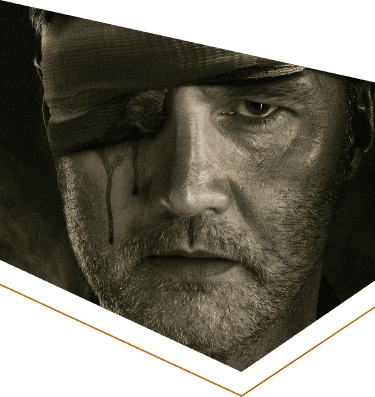
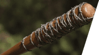
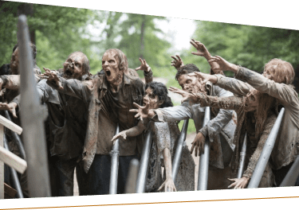

The Walking Dead
L'ascension du gouverneur
La survie face à la menace
Dans l’univers de The Walking Dead, un monde où la quasi totalité de la population est transformée en zombie. La survie est un élément extrêmement important. Les zombies sont une menace inévitable pour les quelques survivants puisqu’ils cherchent à manger les vivants. Le groupe de Rick Grimes, un ancien shérif évolue dans ce monde. L’humanité se transforme, des rivalités explosent. Les différents survivants s’affrontent pour des territoires et des vivres. Certaines personnes prennent le pouvoir et s’accordent un territoire. Parmis ces personnes, le gouverneur, dirigeant Woodbury, une ville qui parait parfaite d’exterieure. En réalité cette ville est dirigée par le propre sens de la justice de Philip Blake,
L’ascension d’un homme cruel
Au départ, Philip Blake cherche lui aussi refuge calme pour s’installer avec son groupe d’amis. Ils entendent parler d’un centre d’accueil, un lieu sécurisé proche d’Atlanta. Ce petit groupe composé de cinq personnes et est mené par Blake. La route vers cette destination est très compliquée et ne se passe pas comme prévu. Tout d’abord un membre du groupe meurt à cause de la menace principale, les zombies. Arrivés à cet endroit, ils découvrent qu’il n’y a rien, pas de centre d’accueil. Par chance, lors d’une journée où le groupe est poursuivi par les morts-vivants, une femme leur fait signe et les accueil dans son immeuble. Le groupe va s’installer avec ces personnes et s’y sentir à l’aise. Ils travaillent alors sur la sécurité du bâtiment. Malheureusement, cette belle vie ne dure pas, un jour le père Chalmers meurt. Et c’est à partir de ce moment que le gouverneur devient instable. Tout va partir de travers...
"Il reprend son .38 dans le salon avec le dernier chargeur - les six ultimes balles en sa possession - et le glisse dans sa ceinture"
Woodbury, Eden ou enfer ?
Près d’Atlanta se trouve, Woodbury, une ville qui paraît paradisiaque dans ce monde. De la collaboration entre humains, de la nourriture et pas de menaces. C’est ce que le gouverneur veut faire croire. En réalité le gouverneur n’a plus de sens de l’humanité. Il organise des combats de prisonniers contre des zombies dans une arène afin de divertir son peuple. De plus il tronçonne les extrémités de ceux qui le contrarient.
L’auteur et ses objectifs
Robert Kirkman est un auteur américain connu pour ses comics et ses romans traitant l’univers The Walking Dead. Dans cet opus l’auteur cherche à travailler sur la psychologie des personnages. En effet la folie atteint beaucoup de monde. L’objectif de ce roman est de comprendre pourquoi Philip Blake est devenu ce qu’il est et comment il est devenu le gouverneur.
D’autres livres
The Walking Dead : La Route de Woodbury
The Walking Dead : La Chute du Gouverneur
The Walking Dead : La Chute du Gouverneur 2
The Walking Dead : L'ère du prédicateur
The Walking Dead : Invasion
The Walking Dead : Cherche et tue
The Walking Dead : Retour à Woodbury